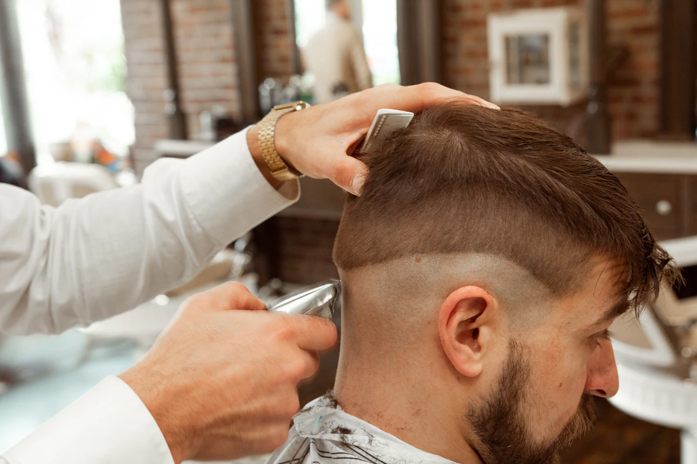

01
Coupes homme
Ciseaux et tondeuse, dégradés nets, coupes classiques. Shampoing chaud inclus à partir de la coupe standard. Les enfants jusqu'à dix ans ont leur propre fauteuil et leur propre rythme.
| Prestation | Durée | Tarif |
|---|---|---|
| Coupe simple | ~40 min | 28 € |
| Coupe + shampoing chaud | ~50 min | 32 € |
| Dégradé (clipper et finitions) | ~45 min | 32 € |
| Coupe enfant (jusqu'à 10 ans) | ~30 min | 22 € |